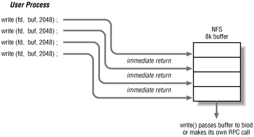

) to process incoming requests. It
differs from the typical client-server model in that processes on NFS
clients make some RPC calls themselves, and other RPC calls are made
by the clients' async threads. All of the NFS client and server
code is contained in the kernel, instead of in the server daemon
executable -- a decision also driven by performance requirements.
7.3.1. nfsd and NFS server threads
With all of the NFS code in the kernel, why bother with
user
processes for
the server? Why not make NFS a purely kernel-to-kernel service,
without any user processes? On systems that have an
nfsd daemon,
nfsd does the
following:
- Initializes a transport endpoint to be used by the kernel to
process NFS requests from. This involves allocating a transport
endpoint on which to listen for requests, and then registering the
endpoint with the portmapper (rpcbind ). It is
much more convenient to do this from a user-level program than in the
kernel.
- Invokes a system call to start in-kernel processing of NFS requests
on the transport endpoint.
What the aforementioned system call does varies among
implementations. Two common variations are:
- The nfsd daemon makes one
system call that never returns, and that system
call executes the appropriate NFS code in the system's kernel.
The process container in which this system call executes is necessary
for scheduling, multithreading, and providing a user context for the
kernel. Multithreading in this case means running multiple (forked)
copies of the same daemon, so that multiple NFS requests may be
handled in parallel on the client and server hosts. For these
systems, the most pressing need for NFS daemons to exist as processes
centers around the need for multithreading NFS RPC requests. Making
NFS a purely kernel resident service would require the kernel to
support multiple threads of execution.
- On systems with kernel thread support, such as Solaris 2.2 and
higher, the NFS server daemon (nfsd ) takes care
of some initialization before making a system call that causes the
kernel to create kernel threads for processing NFS requests in
parallel. The system call does return to
nfsd in this case. Since the kernel creates the
multiple threads for parallel processing, there is no need for
nfsd to fork copies of itself; only one copy of
nfsd is running.
The alternative to multiple daemons or kernel thread support is that
an NFS server is forced to handle one NFS request at a time. Running
multiple daemons or kernel threads allows the server to have
multiple, independent threads of execution, so the server can handle
several NFS requests at once. Daemons or threads service requests in
a pseudo-round robin fashion -- whenever a daemon or thread is
done with a request it goes to the end of the queue waiting for a new
request. Using this scheduling algorithm, a server is always able to
accept a new NFS request as long as at least one daemon or thread is
waiting in queue. Running multiple daemons or threads lets a server
start multiple disk operations at the same time and handle quick
turnaround requests such as
getattr and
lookup while disk-bound requests are in
progress.
Still, why do systems that have kernel server thread support need a
running
nfsd daemon process? With an NFS server
that supported just UDP, it would be possible for it to simply exit
once the endpoint was sent to the kernel. With the introduction of
NFS/TCP implementations, transport endpoints get created and closed
down continuously. Thus
nfsd is needed to listen
for, accept, and tell the kernel about new connections. Similarly,
when the connections are broken,
nfsd takes care
of telling the kernel that the endpoint is about to be closed, and
then
closes
it.
7.3.2. Client I/O system
On the client side, each process
accessing an NFS-mounted filesystem makes
its own RPC calls to NFS servers. A single process will be a client
of many NFS servers if it is accessing several filesystems on the
client. For operations that do not involve block I/O, such as getting
the attributes of a file or performing a name lookup, having each
process make its own RPC calls provides adequate performance.
However, when file blocks are moved between client and server, NFS
needs to use the Unix file buffer cache mechanism to provide
throughput similar to that achieved with a local disk. On many
implementations, the client-side async threadsare the parts of NFS that interact with the buffer cache.
Before looking at async threadsin detail, some
explanation of buffer cache and file
cache management is required. The traditional Unix buffer cache is a
portion of the system's memory that is reserved for file blocks
that have been recently referenced. When a process is reading from a
file, the operating system performs read-ahead on the file and fills
the buffer cache with blocks that the process will need in future
operations. The result of this "pre-fetch" activity is
that not all
read( ) system calls require a disk
operation: some can be satisfied with data in the buffer cache.
Similarly, data that is written to disk is written into the cache
first; when the cache fills up, file blocks are flushed out to disk.
Again, the buffer cache allows the operating system to bunch up disk
requests, instead of making every system call wait for a disk
transfer.
SunOS 4.x, System V Release 4, and Solaris replace
the buffer cache with a
page mapping system. Instead of transferring files into and out of
the buffer cache, the virtual memory management system directly maps
files into a process's address space, and treats file accesses
as page faults. Any page that is not being used by the system can be
taken to cache file pages. The net effect is the same as that of a
buffer cache, but the size of the cache is not fixed. The file page
cache could be a large percentage of the system's memory if
only one or two processes are doing file I/O operations. For this
discussion, we'll refer to the in-memory copies of file blocks
as the "buffer cache," whether it is implemented as a
cache of file pages or as a traditional Unix buffer cache.
The client-side async threads improve NFS performance by filling and
draining the buffer cache on behalf of NFS clients. When a process
reads from an NFS-mounted file, it performs the
read RPC itself. To pre-fetch data for the
buffer cache, the kernel has the async threads send more
read RPC requests to the server,
as
if the reading process had requested this data. NFS
functions properly without any async threadson
a client -- but no read-ahead is done without them, limiting the
throughput of the NFS filesystem. When the async threads are running,
the client's kernel can initiate several RPC calls at the same
time. If restricted to a single RPC call per process, NFS client
performance suffers -- sometimes dramatically.
When a client writes to a file, the data is
put
into the buffer cache.
After a complete buffer is filled, the operating system writes out
the data in the cache to the filesystem. If the data needs to be
written to an NFS server, the kernel makes an RPC call to perform the
write operation. If there are async threads available, they make the
write RPC requests for the client, draining the
buffer cache when the cache management system dictates. If no async
threads can make the RPC call, the process
calling
write( ) performs the RPC call itself.
Again, without any async threads, the kernel can still write to NFS
files, but it must do so by forcing each client process to make its
own RPC calls. The async threads allow the client to execute multiple
RPC requests at the same time, performing write-behind on behalf of
the processes using NFS files.
NFS read and write requests are performed in NFS buffer sizes. The
buffer
size used for disk I/O requests is independent of the network's
MTU and the server or client filesystem block size. It is chosen
based on the most efficient size handled by the network transport
protocol, and is usually 8 kilobytes for NFS Version 2, and 32
kilobytes for NFS Version 3. The NFS client implements this buffering
scheme, so that all disk operations are done in larger (and usually
more efficient) chunks. When reading from a file, an NFS Version 2
read RPC requests an entire 8 kilobyte NFS
buffer. The client process may only request a small portion of the
buffer, but the buffer cache saves the entire buffer to satisfy
future references.
For write requests, the buffer cache batches them
until
a full NFS buffer has been written. Once a full buffer is ready to be
sent to the server, an async thread picks
up the buffer
and performs the
write RPC request. The size of
a buffer in the cache and the size of an NFS buffer may not be the
same; if the machine has 2 kilobyte buffers then four buffers are
needed to make up a complete 8 kilobyte NFS Version 2 buffer. The
async thread attempts to combine buffers from consecutive parts of a
file in a single RPC call. It groups smaller buffers together to form
a single NFS buffer, if it can. If a process is performing sequential
write operations on a file, then the async threads will be able to
group buffers together and perform
write
operations with NFS buffer-sized requests. If the process is writing
random data, it is likely that NFS writes will occur in buffer
cache-sized pieces.
On systems that use page mapping (SunOS 4.x, System V Release 4, and
Solaris), there is no buffer cache, so the notion of "filling a
buffer" isn't quite as clear. Instead, the async threads
are given file pages whenever a write operation crosses a page
boundary. The async threads group consecutive pages together to form
a single NFS buffer. This
process is called
dirty
page clustering.
If no async threads are running, or if all of them are busy handling
other RPC requests, then the client process performing the
write( ) system call executes the RPC itself (as
if there were no async threads at all). A process that is writing
large numbers of file blocks enjoys the benefits of having multiple
write RPC requests performed in parallel: one by
each of the async threads and one that it does itself.
As shown in
Figure 7-2, some of the advantages of
asynchronous Unix
write( ) operations are
retained by this approach. Smaller write requests that do not force
an RPC call return to the client right away.

Figure 7-2. NFS buffer
writing
Doing the read-ahead and write-behind in NFS buffer-sized chunks
imposes a logical block size on the NFS server, but again, the
logical block size has nothing to do with the actual filesystem
implementation on either the NFS client or server. We'll look
at the buffering done by NFS clients when we discuss data caching and
NFS write errors. The next section discusses the interaction of the
async threads and Unix system calls in more detail.
TIP:
The async threads exist in Solaris. Other NFS implementations use
multiple block I/O daemons (biod daemons) to
achieve the same result as async threads.
7.3.3. NFS kernel code
The functions performed by the parallel
async threads and kernel server threads
provide only part of the boost required to make NFS performance
acceptable. The
nfsd is a user-level process,
but contains no code to process NFS requests. The
nfsd issues a system call that gives the kernel
a transport endpoint. All the code that sends NFS requests from the
client and processes NFS requests on the server is in the kernel.
It is possible to put the NFS client and server code entirely in user
processes. Unfortunately, making system calls is relatively expensive
in terms of operating system overhead, and moving data to and from
user space is also a drain on the system. Implementing NFS code
outside the kernel, at the user level, would require every NFS RPC to
go through a very convoluted sequence of kernel and user process
transitions, moving data into and out of the kernel whenever it was
received or sent by a machine.
The kernel implementation of the NFS RPC client and server code
eliminates most copying except for the final move of data from the
client's kernel back to the user process requesting it, and it
eliminates extra transitions out of and into the kernel. To see how
the NFS daemons, buffer (or page) cache, and system calls fit
together, we'll trace a
read( ) system
call through the client and server kernels:
- A user process calls read( ) on an NFS mounted
file. The process has no way of determining where the file is, since
its only pointer to the file is a Unix file descriptor.
- The VFS maps the file descriptor to a vnode and calls the read
operation for the vnode type. Since the VFS type is NFS, the system
call invokes the NFS client read routine. In the process of mapping
the type to NFS, the file descriptor is also mapped into a filehandle
for use by NFS. Locally, the client has a virtual node (vnode) that
locates this file in its filesystem. The vnode contains a pointer to
more specific filesystem information: for a local file, it points to
an inode, and for an NFS file, it points to a structure containing an
NFS filehandle.
- The client read routine checks the local buffer (or page) cache for
the data. If it is present, the data is returned right away.
It's possible that the data requested in this operation was
loaded into the cache by a previous NFS read operation. To make the
example interesting, we'll assume that the requested data is
not in the client's cache.
- The client process performs an NFS read RPC. If
the client and server are using NFS Version 3, the read request asks
for a complete 32 kilobyte NFS buffer (otherwise it will ask for an 8
kilobyte buffer). The client process goes to sleep waiting for the
RPC request to complete. Note that the client process itself makes
the RPC, not the async thread: the client can't continue
execution until the data is returned, so there is nothing gained by
having another process perform its RPC. However, the operating system
will schedule async threads to perform read-ahead for this process,
getting the next buffer from the remote file.
- The server receives the RPC packet and schedules a kernel server
thread to handle it. The server thread picks up
the packet,
determines the RPC call to be made, and initiates the disk operation.
All of these are kernel functions, so the server thread never leaves
the kernel. The server thread that was scheduled goes to sleep
waiting for the disk read to complete, and when it does, the kernel
schedules it again to send the data and RPC acknowledgment back to
the client.
- The reading process on the client wakes up, and takes its data out of
the buffer returned by the NFS read RPC request.
The data is left in the buffer cache so that future read operations
do not have to go over the network. The process's
read( ) system call returns, and the process
continues execution. At the same time, the read-ahead RPC requests
sent by the async threads are pre-fetching additional buffers of the
file. If the process is reading the file sequentially, it will be
able to perform many read( ) system calls before
it looks for data that is not in the buffer cache.
Obviously, changing the numbers of async threads and server threads,
and the NFS buffer sizes impacts the behavior of the read-ahead (and
write-behind) algorithms. Effects of varying the number of daemons
and the NFS
buffer sizes will be explored as part
of the performance discussion in
Chapter 17, "Network Performance Analysis".